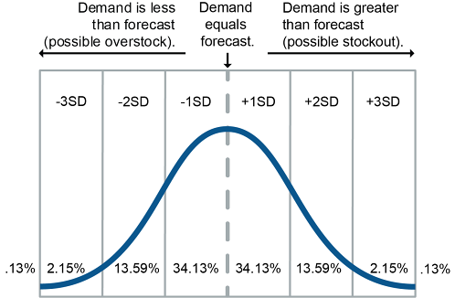
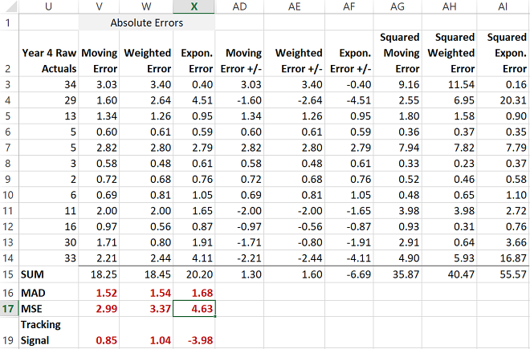
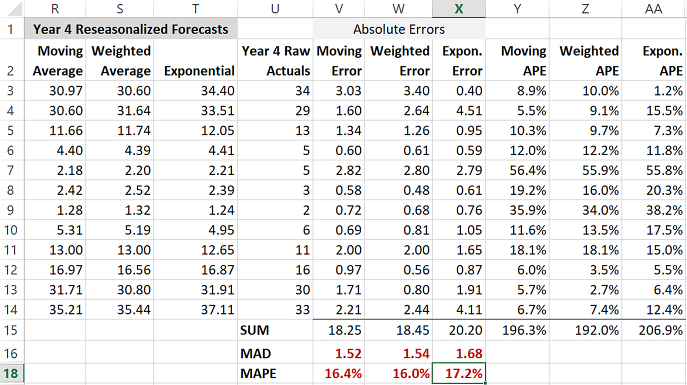
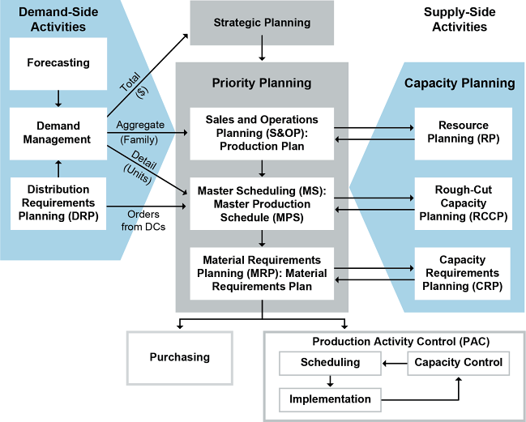
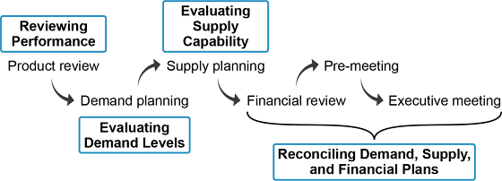

Connectivity involves getting the organization's information systems (IS) to talk to the information systems of the organization's partners. Understanding connectivity requires understanding how the IS architecture needs to be designed to enable this connectivity. Prior to addressing design, there is a discussion of IS architecture components to clarify the basics of an information system. Next, we address what connectivity provides: visibility and information sharing capabilities. Finally, legal and regulatory requirements related to information sharing are addressed.
📖 ASCM Definition — information system architecture:
The core technologies of the information system architecture can be summarized as databases and their management systems, networks, software, and configuration.
📖 ASCM Definition — database management system (DBMS):
📖 ASCM Definition — data dictionary:
📖 ASCM Definition — network:
📖 ASCM Definition — server:
Local area network (LAN): A high-speed data communication system for linking computer terminals, programs, storage, and graphic devices at multiple workstations distributed over a relatively small geographic area such as a building or campus.
Wireless LANs use radio waves to transmit data. Wireless systems are less expensive to set up since they require no wiring, but they do require higher security to prevent unauthorized interception and use of data.
Companies use wide area networks to share information between geographically dispersed facilities. The ASCM Supply Chain Dictionary states that a wide area network (WAN) is "a public or private data communication system for linking computers distributed over a large geographic area."
A virtual private network (VPN), a low-cost internet-based secure transmission method, can allow secure communications with individuals and organizations in various locations. VPNs use encryption to ensure secure communications. External VPN users see the system as if they were in the facility using the LAN.
Two other network terms from the ASCM Supply Chain Dictionary are intranet and extranet.
Intranet: A privately owned network that makes use of internet technology and applications to meet the needs of an enterprise. It resides entirely within a department or company and provides communication and access to information, similar to the internet, for internal use only.
Extranet: A network connection to a partner's network using secure information processing and internet protocols to do business.
Software describes programs that create, display, modify, process, and analyze the data in databases in various ways. Types of software include operating systems and applications.
📖 ASCM Definition — operating system (O/S):
Familiar operating systems include Windows, Unix, Linux, and the Mac O/S.
Application software is controlled by an operating system and fills various computing needs such as to orchestrate, plan, transform, source, order, account for, fulfill, and return products and services.
Software can be judged by its relative cost, its reliability (failure rate), its relevance (usefulness and time until obsolescence), its scalability (bandwidth or number of users it can accommodate), and its maintainability (relative cost to create, configure, or upgrade).
📖 ASCM Definition — software-as-a-service (SaaS):
SaaS eliminates time required for installations and upgrades.
With SaaS, the software is not downloaded to the user's computer or server. The organization effectively rents the software; SaaS software licenses are still used to indicate the number of authorized users and so on, but the license is in force only so long as the subscription (usually monthly) is kept current.
SaaS eliminates time required for installations and upgrades. For example, Google's word processing and spreadsheet tools fulfill the basic criteria of a SaaS application:
A vendor (Google)
End-user access to data and software, run and used over the internet
This example can be classified as one broad category of SaaS—customer-oriented services. Business-oriented SaaS applications are often "lines of business services," or business solutions for processes such as supply chain management, customer relations, and others.
Exhibit 2-11 summarizes some basic advantages of SaaS for users and vendors.

Certainly SaaS does not come without challenges. Vendors must constantly reaffirm that SaaS solutions are lighter, simpler, more intuitive, and more agile. Users are looking to vendors to facilitate easier deployments and provide more robust integration strategies that recognize the heterogeneous environments that most customers now run and will run in the near future. Application areas where functionality is fairly standardized and commoditized (such as customer relationship management, security, sales support, and the IT help desk) are thus far the most prevalent uses for SaaS. Gaps in customization and integration capabilities make SaaS less appealing in areas requiring specialization or complex, real-time integration.
Configuration from an information system architecture standpoint refers to how the actual hardware, operating system, application software, and networks are arranged.
The most common configuration is a client/server system, where the clients are personal computers (PCs) or devices and the servers may be mainframe systems. The operating system runs the clients and the servers. The client/server concept involves distributing processing tasks so that the client takes care of local, low data demand tasks and the server/mainframe performs general, high data demand tasks for the company.
The extended chain of suppliers and customers operates primarily over the internet, which is a distributed form of the client/server structure, or a network of networks in which the web browser is the client connected to a web server.
Another option for configuration with supply chain partners or other internal offices is cloud computing, described in the ASCM Supply Chain Dictionary as "an emerging way of computing in which data is stored in massive data centers that can be accessed from any computer connected to the internet." Cloud computing allows authorized members to have virtual access to a network of remote servers, databases, or software no matter their actual location. It is a network of data centers enabling computing resources to be accessed and shared as virtual resources in a secure and scalable manner.
Cloud applications are accessed on a web browser and are offered as software as a service (SaaS), or users can purchase or develop software and upload it to the cloud. Similarly, organizations can eliminate their owned platforms or infrastructure and lease platform as a service (PaaS) or infrastructure as a service (IaaS). SaaS providers may be PaaS customers, and PaaS providers may be IaaS customers. That is, while cloud computing is often advertised as a way to connect with external service providers, it can also be used internally as a way to focus on core capabilities and outsource technology management.
Standards and high adoption rates have made cloud computing mainstream. (In a 2020 Statistica survey cited in an article by Hunter Lowe, 87 percent of organizations indicated they used a hybrid cloud strategy.) An example of a cloud computing standard is ISO/IEC 17788:2014. (This standard was reviewed in 2021 and needed no update). It provides an overview of cloud computing and its terminology. Many SaaS cloud-based systems can interface with an organization's enterprise resources planning systems. Many ERP systems have enhanced their delivery methods using cloud- and web-based access, and cloud-only ERP systems such as NetSuite or Plex also exist.
Supply chain software lends itself well to cloud-based applications due to the need to integrate so many partner systems.
Supply chain software lends itself well to cloud-based applications due to the need to integrate so many partner systems. According to a Supply Chain News article by Bridget McCrea, the cloud portion of the supply chain management software market grew 2.5 times faster than the overall market in 2019, a year in which cloud software represented 34 percent of supply chain management applications. Supply chains want to use clouds both to reduce costs and to increase agility.
Here are some other benefits of using cloud versions of supply chain management software from the Lowe article:
Exhibit 2-12 shows the technology components of information system architecture, including the connection to external system(s) over the internet or via cloud computing.
Information system architecture is like any type of architecture in that it consists of the detailed plans, drawings, and standards that carefully define the structure of the things being designed. An information system architecture maps out the specifics of how information is gathered, stored, shared, used, and updated/retired. A well-designed architecture enables a high velocity of information. The velocity of information is the ease and speed involved in creating, compiling, transferring, understanding, analyzing, and using information. Poor velocity of information constrains the degree of efficiency and effectiveness a supply chain's functions can achieve.
The definition of the information system architecture states that it should reflect the architecture of the organization. This implies that if the organization wants to change its basic architecture, say, from a department focus to an extended process focus, its information system architecture will also need to change. If it does not, older technology architectures could prevent the changes from succeeding. Therefore, supply chain managers review an organization's information system architecture at a high level so they can assess if it needs to be changed or upgraded to facilitate a specific supply chain strategy.
Supply chain network design and configuration include information flow design and major sourcing decisions. A key goal of network design and configuration is to promote efficiency. This is done by positioning and managing inventory effectively and using resources appropriately. Since the information system architecture enables various departments and external partners to become a unified whole, supply chain information system architecture design is addressed here at the big picture or "road map" level. A technology road map is a brief document (or white board) that sets out overall priorities and high-level plans for a given large-scale process such as supply chain design. The various elements can be reprioritized or changed as needed. Some road maps include graphical representations showing the current state and the future state. Specific parts of the road map then are enacted using project management.
Since information strategy is closely tied to overall network design and configuration, we will show how organizations may go in different directions with their information systems depending on whether their competitive basis is efficient (i.e., cost-basis or lean), responsive, customer-focused, and/or some other mix of priorities.
Exhibit 2-13 provides a road map of how the elements of the information systems are designed in parallel to the organization's strategic and tactical plans for the organization and extended supply chain.
Let's look at each of the categories in Exhibit 2-13 more closely.
Like all other parts of the supply chain, supply chain design for all information systems and technology should be based on, and align with, the organization's overall strategy. If a company's focus changes, the information system architecture should then be changed or upgraded to facilitate the new supply chain strategy.
The information strategy translates the organization's strategy into commitments to treat information systems as strategic investments, and it sets guiding principles, priorities, and common goals for network design. The results of the information strategy are reflected in a high-level end-to-end vision of the information system structure. Similarly, the extended supply chain strategy is translated into a strategic vision for the extended supply chain. A gap analysis is performed with key willing partners to compare the existing systems of supply chain partners with what is envisioned, and a model for the extended enterprise is developed in consultation with partners to resolve existing gaps.
Information content definition involves making decisions on what data need to be collected, how they will be collected, how their accuracy will be maintained, and how they will be stored, accessed, controlled, analyzed, and retired. For the extended supply chain it involves business modeling, which maps the dynamics and interactions of each supply chain partner. Extended supply chain business modeling includes decisions such as what market segments are being targeted, how performance will be measured, how profits will be shared among partners, and how products will be distributed.
Supply chain infrastructure is evaluated based on these decisions; this includes determining
The appropriate number of facilities (warehouses, plants)
The size and location of each facility
The allocation of space for products within the facility
Distribution strategies.
Information policies and controls are the agreed-upon methods to be used in information infrastructure design, daily operations, and continual improvement initiatives to ensure that the organization's data and software systems perform as expected. Information systems use data and cost collection to see if the supply chain is an efficient channel for product or service distribution. Controls provide oversight against system misuse and assist with auditing. Governance of information systems and policy compliance will require training and ongoing management support.
For the extended supply chain, the issue is enabling the desired levels of communications and security. Collaboration between partners involves coming to agreement on how networking and data sharing will occur by settling on common information policies and work processes. It also involves determining the roles of partners in establishing data repositories and communications methods. Plans should be designed to be reviewed and adapted as situations change.
Information infrastructure design involves determining how to translate policies and controls into a cohesive and cost-effective information system that minimizes data duplication and errors, provides access to information at all necessary internal and external points, and supports effective analysis and efficient transaction processing. This is the level at which detailed decisions are made on how to perform networking, what software to use to best achieve strategic goals, and how to configure the hardware and software for optimum flexibility and growth. Decisions may include how to leverage existing systems; analysis of the costs and benefits of leasing versus purchasing, upgrading, or replacing software; and decisions on the use of interface devices and communications tools.
Specific decisions on databases/clouds, information networks, software, and configuration are made following design approval, including use of existing systems, decisions to upgrade or add technologies, specific vendor search and selection, etc.
Decisions on databases and database management systems (including clouds) are critical to the ability of the organization to maintain the integrity, availability, and usefulness of data for decision making. Data for extended supply chains must allow fast access while remaining synchronized. Depending on how databases are designed, they can enable or hinder internal and external integration and external collaboration. Quality data repositories can be a true source of competitive advantage; poor data or poor access can cause users to distrust and discredit otherwise useful systems.
Similarly, networking, software choices, and configuration decisions should be selected to fulfill business requirements while providing a positive return on investment.
Supply chain network design should include plans for continual system change and improvement for the internal and extended supply networks.
The results of regular strategy update sessions, tactical system improvement sessions, and operational gap analyses should result in IT action plans for both the organization and the extended supply chain. These plans should prioritize development efforts and expenditures, create projects and tasks, and include feedback mechanisms to assess project success. Specific cross-functional teams should be responsible for these plans.
Data communications methods are the computer languages and methodologies that enable systems to intercommunicate and act as a seamless whole.
Ideally, communications between supply chain partners have two features: They should be easy to link or unlink, and, when linked, they should be tightly integrated. The more tightly integrated the communications are between supply chain partners, the more the supply chain can act as though it were a virtual organization. The value of communications methods that enable efficient interbusiness links depends on how businesses make use of the data. If they manage the process properly, they can increase the visibility and accuracy of information, speed transactions, and reduce duplication of efforts. These efficiencies can reduce cycle times, inventories, and capital expenses and increase return on investment and customer service.
While the communications themselves need to be tightly integrated, the method of achieving that integration should be easy to create, change, and maintain. This is accomplished using a middle end that resides between the user interface and the back end server and database systems. Here we cover two types of middle end systems, middleware and application programming interfaces (APIs). Middleware is more complex and requires more investment in programming but can connect to multiple tools, while APIs are direct one-to-one connections that are easier to develop. First, we clarify where the middle end fits in the overall information system architecture.
Front end, middle end, and back end are ways of describing conceptual roles of software as well as areas of specialization for software developers:
This is the "glue" that holds the front end together with the back end. It is essentially a translation service for various applications to enable them to converse. Middle end programmers are concerned with automating data requests or data transmissions, and the key is to ensure that the interface is simple to program, simple to document, and simple to modify or scale upward. An example of scaling upward is that the middleware does not become the bottleneck when the front end and back end could handle more traffic.
Back end.
This is the server and the database (which could be in the cloud). Back end developers are concerned with ensuring fast access to the right data and for keeping that data accurate, well organized, and secure.
Here we take a closer look at the middle end. These systems are intended to overcome a major obstacle that stands in the way of creating visibility and automated transactions between supply chain partners: getting incompatible hardware and software to communicate automatically and securely without great expense or development time.
The middle end is important because it helps to integrate the supply chain, enables systems and companies to share information, eliminates duplicate and inconsistent data, and breaks down organizational silos—in short, it enables an optimized and collaborative supply chain. The middle end also enables secure transactions through authentication (preventing unauthorized users from gaining entry) and authorization (users can only perform authorized transactions or access their own data).
📖 ASCM Definition — legacy system:
While many of the methods discussed next are becoming dated through the continual advancement of the field, the expense of upgrading to newer methods means that many organizations are still relying on some of these older methods.
Middleware is "software that interconnects incompatible applications software and databases from various trading partners into decision-support tools such as an enterprise resource planning system." (ASCM Supply Chain Dictionary).
Subtypes include content-level middleware (i.e., electronic data transfer), data-oriented middleware, and process-oriented middleware.
Content-level middleware specifies a shared format for standard forms and each of the data fields. The parties involved must agree upon the shared format that will be used. Each may need to translate their data to work with this common format. It is more like an electronic version of sending someone a paper invoice or other document without requiring data reentry. It cannot automate multiple system interactions. Content-level middleware is also called electronic data transfer (EDT).
EDT refers to any transfer of information using electronic means. Originally, EDT could take place only through proprietary electronic data interchange and electronic funds transfer (EFT). Electronic data interchange (EDI) is "the paperless (electronic) exchange of trading documents, such as purchase orders, shipment authorizations, advanced shipment notices, and invoices, using standardized document formats" (ASCM Supply Chain Dictionary). EDI and EFT systems were effective in sending data between two locations if each location was set up using the same standards. Distributed, open standards for EDI plus the internet have enabled much more fluid EDI transfers. Funds transfers have their own standards and are necessarily very restricted. (EFT is vital for supply chain payments but is outside the scope of this text.)
EDI is primarily internet-based today, including via mobile devices. Newer EDI methods should take these cellular device needs into account by providing fast, simple data transfers in self-contained small packets that keep interruptions from corrupting the data. Also, because wireless transmissions are easier to intercept, data security is paramount.
📖 ASCM Definition — value-added network (VAN):
EDI data standards include internationally agreed-upon extranet protocols for transmitting data between companies. In this way, EDI can connect systems that do not run the same applications or ERP systems.
While newer methods to be discussed shortly have replaced EDI in many cases, EDI remains a common method of connecting supply chains for basic transactions such as customer orders, advanced shipment notifications, and invoices. Because of the expense of implementing EDI, the fact that it often needs to be batch-processed, and the need to agree on one of the various EDI data formats, newer web services-based offerings (discussed below) or cloud native formats are taking over this space. Many of the more complex messaging requirements involved in supply chain management such as supply chain event management (SCEM) are too complex and too expensive to implement with EDI.
Data-oriented middleware involves large system-to-system linkages that require extensive customization. Each connection usually requires a great deal of configuration, as all the shared data fields must be mapped out one by one. For example, when one system sends information with a "product number," the receiving system knows that "product number" is what it calls "Finished Good ID#." If you decide you now want to link to a third application, or upgrade to a new version, you have to start from scratch. Therefore, this option is expensive and can become obsolete fast.
📖 ASCM Definition — business process management (BPM):
Process-oriented middleware is smart middleware that manages entire conversations.
Process-oriented middleware is smart middleware that manages entire conversations. The linked businesses first map their processes; then the process-oriented middleware runs the processes and sends the data to the relevant systems as dictated by the process map. Once the process is mapped out, different companies with various types of ERP, legacy, and best-of-breed applications can apply the process map to their systems and communicate effectively without attempting to make systems congruous. It requires businesses to focus on processes and therefore has a side benefit of process simplification. However, process-oriented middleware may not be as simple to integrate with existing systems as advertised.
Integration with automatic identification technologies.
An application programming interface (API) is middle end programming code that resides nearer to the front end systems than middleware. It enables simple one-to-one interactions with the back end. Internet traffic from other systems, IOT devices, and mobile devices are sent to the API, which translates the data into a format useful to the web server and ultimately to its database. Data returned from these queries (requests for information) is translated back into the format required for the other application. The API enables an authorized system to query the database automatically and frequently. Newer forms of APIs (e.g., JavaScript Object Notation [JSON]) are lightweight, meaning they are easy to create and update. APIs are developer-friendly, platform-independent, and easily scalable. APIs are also used for large-scale applications such as ERP systems that need to talk to their back end systems. APIs can be for public use, for specific partner use only, for internal use only, or a combination. They can enable real-time transactions and real-time analytics.
📖 ASCM Definition — web services:
The standards are open, meaning that all developers can access and use the same standards and communications can be performed across operating systems, application platforms, and computer languages.
The advantage of web services is that they save time and money by cutting development time, especially for integration. For example, if an airline develops its flight check-in software using web services, it could build the application using the best available database search engine from one vendor, the best seat assignment application from a different vendor, and their own pricing application. Web services make use of only the specific data elements that are made available for sharing. The components would work together as one application, but just a portion of the application could be upgraded independently.
Two types of APIs are SOA and microservices.
Service-oriented architecture (SOA) is an approach to software design ("architecture") in which applications are assembled from reusable components ("services") to allow for widespread and flexible sharing of supply chain partner services. A service could be a credit check or matching an invoice with a purchase order, or it could be more elaborate, for example, a rule to reroute trucks automatically based on traffic data.
SOA has two main goals: to achieve loose coupling among services and to separate applications from their data so they achieve universal functionality. The loose coupling of modules could be compared to the round connectors on Lego® building blocks that make them easy to reconfigure. Universal functionality requires that all messages contain all data necessary to complete processing (rather than assuming that the data can be looked up). This allows the best service provider in each area to offer its service without offering the whole package.
A consequence of loose coupling is that services can run anywhere on a network without being restricted to a specific hardware or software platform or programming language. In contrast, tightly coupled systems have interoperability issues.
The results of using SOA are a dramatic decrease in application development time because many portions of an application can be reused. Applications are by nature more adaptable, interoperable, and scalable.
Microservices are newer cloud-native interfaces that require the same loose coupling of services as SOA. While SOA is used to help multiple applications talk to each other, microservices help various services within a single application talk to each other. There are a number of other differences from SOA that are of interest to programmers related to ensuring the efficiency and resilience of the code, but the gist is that while similar to SOA, microservices are a different programming style.
One model used in microservices as well as in some other types of middleware is called publish/subscribe messaging. In this model, the publisher creates one or more categories of interfaces or other types of messages and publishes them. Any number of organizations or persons could then subscribe to receive these publications as soon as they are released. The publisher is in effect creating some standard templates, and it is up to the subscriber to get their end to communicate with the given template.
📖 ASCM Definition — supply chain visibility:
In traditional, functionally oriented companies, silo walls obstruct "horizontal" visibility outside one's own department. ("Vertical" visibility also tends to be limited. Management may be able to see downward to activities at the tactical level, but visibility upward may be limited to information framed as directives and performance reviews.) The more visibility supply chain partners have to see through functional walls and also upstream and downstream into the activities taking place in other tiers of the supply chain, the greater the chance they all have of synchronizing their operations to produce value for the customer.
For example, with global positioning, satellite communications, and the internet of things (IOT), logistics managers can track individual items as they are shipped across the world to customers in foreign countries. In fact, anyone in the supply chain with the necessary technology, including the customer, can be given access to this information. This real-time visibility into customer shipments gives logistics managers the ability to react to difficulties long before they could have just a few years ago.
One obstacle to visibility along supply chains has been the unwillingness of partners to share information. Consequently, implementing process improvement requires building trust across the functions and partners who are party to the process involved. A small-scale pilot project can be helpful in demonstrating trust and honest communication. Once partners see that data sharing can work to their advantage, they are more willing to provide that all-important visibility into their operations.
And, most appropriately in the present context, data used to measure supply chain performance against key indicators can be made much more easily available to continuous process improvement teams. Visibility is one key to successful improvement initiatives.
Information sharing typically takes the form of e-business these days. E-business is defined as "abbreviation for electronic business. It refers to conducting business processes on an electronic network, typically the internet." (ASCM Supply Chain Dictionary). E-business is a collection of business models and practices enabled by internet technologies that network customers, suppliers, and productive capabilities in order to continually improve supply chain performance.
📖 ASCM Definition — electronic commerce (e-commerce):
There are several electronic business models: business-to-consumer (B2C), business-to-business (B2B), consumer-to-consumer (C2C), consumer-to-business (C2B), and business-to-business-to-consumer (B2B2C). All are considered to be types of e-commerce. Since the focus of electronic business is on improving the information sharing performance of the extended enterprise, our focus is on the B2C and B2B models.
Today, some level of electronic business is required for almost all organizations, and not only B2C but also B2B companies engage in e-commerce (e.g., industrial products) to extend their supply chains. Not all organizations will be able to sell their products or services on the internet, but almost all should engage in brand awareness and marketing using at least a website, even if the site is just informational rather than interactive. Modern websites use responsive design, which detects the type of device the user is using to access the site and then automatically reformats the information for optimal display on a phone or tablet, in addition to enabling touch-screen capabilities as needed. In addition to this, some organizations will benefit from developing a downloadable app.
The goal of all supply chains should be a network that functions as if it were a single well-run company.
The goal of all supply chains should be a network that functions as if it were a single well-run company. The boundaries, even when geographically dispersed, should be invisible to the customer. The internet has made this feasible, if still challenging.
Internet-enabled supply chains—those in which all partners share data through the internet—have specific characteristics that distinguish them from less advanced supply chains. They exhibit these characteristics in different degrees, depending upon the sophistication of their strategy and use of internet technology.
An internet-enabled supply chain realizes the following benefits:
Exhibit 2-14 shows how the traditional and electronic business supply chains differ.

📖 ASCM Definition — B2B (business-to-business e-commerce):
B2C—Business-to-consumer e-sales: Business being conducted between businesses and final consumers, largely over the internet. It includes traditional brick-and-mortar businesses that also offer products online and businesses that trade exclusively on the internet.
B2B commerce includes exchanges and direct collaboration technologies. Exchanges are intended to decrease the costs of procurement, resource management, and fulfillment by providing access to a larger market and by lowering transaction costs through automation.
Objectives of B2C are to create a wider customer and revenue base, build customer loyalty through tailored offerings and shopping experiences, and create an ever-expanding source of customer information. B2C focuses on retail sales and includes things such as banking, shopping, product downloads, travel, and insurance. It may also simply include providing corporate information to customers or collecting information on customers through incentives such as surveys, product samples, games, or prizes.
Business-to-business-to-consumer (B2B2C) is a collaborative e-commerce model that involves two or more B2B companies each collaborating to provide enhanced value to the end consumer. A common example is of two organizations that share sales leads with each other and cross-promote each other's products to consumers. The Amazon Marketplace is another example.
B2B, B2C, or B2B2C may include virtual service providers, a broad category of companies that own no assets but direct the actions of many companies and may provide capital as needed to produce, transport, and/or sell goods or services. Virtual hybrids own a relatively small number of assets. Often what these companies provide is expertise in supply chain coordination for those with a particular core competency.
Electronic business was initially so popular that it gained market support even without financially sound business models. Eventually, businesses unable to sustain profits failed. A primary cause of this failure was lack of a valid business strategy and a valid electronic business strategy. Both must exist and must be tightly integrated, and they must be guided by a realistic vision communicated and accepted throughout the extended supply chain by involving these partners in strategic planning.
The electronic business strategy should enable collaboration with the extended supply chain, including integration of customers and suppliers. Traditional business strategy still needs to be robust to allow the efficient sourcing, manufacturing, and fulfillment of orders that satisfy actual customer needs. Company and e-business strategy needs global reach.
E-business strategy indicates how the firm intends to connect with partners. The link between business strategy and e-business strategy is enhanced by optimization, visibility, and shared planning tools.
Implementing e-business solutions requires a formidable investment of time and money for the ongoing discovery of IT capabilities, contract and request for proposal development, benefit-cost analysis, infrastructure costs, training, change management, consultant fees or opportunity costs for staff time, customization, configuration, and ongoing maintenance. Some of the necessary costs of doing e-business include the following:
Significant effort must be made to advertise and to provide easy methods of searching for e-business services. A website can have a much greater variety of goods for sale than a typical retail location, but if the site does not provide an easy way to find what is needed, such as by intelligent product recommendations, this variety becomes cumbersome.
Justifying a particular e-business strategy requires consideration of its costs and benefits. External factors, such as the economic environment, market turbulence, and the competition's capabilities and stage of supply chain sophistication, must also be examined.
Comparison of the cost of maintaining old technology plus the opportunity cost of lost capabilities versus the cost of implementing a new technology can help make the choice clear. In general, if an electronic business strategy increases competitive advantage, it will tend to decrease inventory, facility, and transaction costs while increasing transportation and technology costs.
Another choice is whether to outsource the e-business technical functions or to maintain the IT internally. The cost of monitoring an outside arrangement must be added to the direct cost of outsourcing.
Failure is a real possibility if the balance between benefits and costs tips the wrong way. However, some level of investment in e-commerce is now a required cost of doing business. Strategy should focus on finding the investment level that is appropriate for the organization and the supply chain.
No project will succeed unless it has cost controls in place. Management must also incorporate a review process to improve future project budgeting.
The global COVID-19 pandemic has changed consumer behavior related to the likelihood of using traditional versus online channels. While e-commerce has been a priority for most organizations for a very long time now, the pandemic forced many organizations to make immediate e-commerce investments to survive at all. A Harvard Business Review article by Kathy Gramling et al. indicates that the pandemic has resulted in a lasting shift in B2C consumer behavior, with significantly more people still planning to shop online for things they traditionally purchased in retail stores. Many retail stores themselves turned into miniature distribution centers for online sales. The article cites research by the EY Future Consumer Index that indicates the retail locations likely to re-engage consumers and get them back in physical spaces are those that offer consumer experiences, not just products. Being price-competitive with online-only competitors is also vital as is an option to buy online and pick up in store.
In these tumultuous times, different industries and business models have experienced different levels of success from the use of electronic business. Three companies have historically used it to spur incredible growth: Amazon, originally just an online bookseller; Dell, a pioneer in direct sales of assemble-to-order computers; and Alibaba, owner of several Chinese e-commerce juggernauts. This discussion describes their origins and the direction they each have taken in terms of their use of e-business.
Amazon was founded in 1994 by Jeff Bezos.
It went online in 1995 as Amazon.com and originally sold only five product types: compact discs, computer hardware, computer software, videos, and books.
Its original supply chain started out longer than that of traditional brick-and-mortar book retailers.
It invested heavily to maximize its servers' capacity to handle peak traffic during holiday shopping periods.
It added its own distribution functions across North America, Latin America, Europe, Africa, and Asia.
It has its own software development centers. (Some are run by an Amazon subsidiary.)
It located its automated fulfillment centers in select cities around the globe, often near airports.
It turned its first profit at the end of 2001—one cent per share.
It is now the largest online retailer, with net sales in 2020 topping $386 billion, a $100 billion increase over the prior year, making it a pandemic success story.
Dell, originally a maker of personal computers, was founded in 1984 by Michael Dell, a college freshman at the University of Texas.
It designed and built its first computer in 1985 and differentiated itself with risk-free returns and next-day at-home product assistance.
It manufactured the industry's fastest-performing PC and opened its first international subsidiary in the U.K. in 1986.
It debuted its online website in 1996 and sold $1 million of product per day within six months after the site was launched.
It climbed onto the Fortune 500 list in 1992.
It provided customers with at-the-time innovative online technical support via the internet.
It sold $40 million a day of online product, which made it one of the highest volume e-commerce sites in the world in 2000.
It expanded its product portfolio to include printers, projectors, and consumer electronics.
It launched free product recycling and a blog, Direct2Dell, enabling fast two-way communication with customers, in 2006.
It created an investor relations blog and participated in social media.
It offered its customers high-tech end-to-end IT services and cloud-based enterprise solutions.
It became a privately held company again in 2013 and offered enterprise-class IT capabilities to small businesses and remote offices.
It established Dell Ventures, which supports new businesses that align with Dell's expertise and future vision for the cloud, big data, next generation data centers, storage, mobile, and security.
Alibaba is the dominant e-commerce site in the world's largest e-commerce market, China. Its largest website, Taobao.com, can be thought of as a giant Chinese bazaar that is part B2C with direct deliveries like Amazon, part middleman like eBay, part PayPal with its Alipay payments processing (it also protects buyers if sellers fail to deliver), and part Google with its fees for advertising and promoted search results (it doesn't charge sellers to list merchandise). You can even buy real estate on the site. Its Tmall.com website is for larger retailers, such as Gap, Nike, and Apple. It also supports B2B e-commerce, connecting manufacturers with overseas clients, which was actually its primary purpose when it was founded in 1999.
Other companies have had slower starts. Mega-retailer Walmart's online sales accounted for only two percent of its U.S. revenue in 2012. However, Walmart grew online revenues at 79 percent for its fiscal year 2021, and for Q4 of that year e-commerce made up 6.2 percent of its comparable sales growth, excluding fuel. It has also been competing with Amazon Prime with its Walmart+ e-commerce membership.
So what does it take to be successful in e-commerce?
E-business must maximize the efficiency of all channels. Retailers must be prepared to serve customers across all channels even when they seemingly may compete against each other, such as sales of televisions via the web versus an in-person visit to a traditional retailer.
Order visibility that extends to the customer to reduce inquiries and complaints about fulfillment status
Shipping methods consistent with profitable sales (using a transportation management system [TMS])
Sensible warranty and return policy (customers cannot see merchandise until received)
Reevaluation of wholesale or retail locations on the basis of site profits
E-commerce was born when websites could be made interactive rather than static. This enabled internet transaction processing and payment acceptance. B2B (business-to-business commerce) is characterized by automating traditional business transactions such as formal sourcing, so it took off when the internet became viable for automated data transfer in two directions instead of only one and when smaller businesses could participate due to the low cost of the internet.
Exhibit 2-15 shows how B2B commerce facilitates faster and cheaper links in the supply chain.
E-commerce software includes sell-side, buy-side, content management, and B2B collaboration applications. Prior to addressing these types, the layers of B2B and B2C e-commerce are introduced.
The internet structure can be seen as a series of layers (based on a study sponsored by Cisco). The layers can show where investments are needed.
Foundation layer. The foundation layer includes all physical means of transmitting data over the internet plus all necessary networking and interface devices. This layer also has security systems such as firewalls. It includes assets both in and out of the company's control.
Application layer. The application layer includes all web-specific applications and tools for creating interactive websites. Applications include a web directory ("a list of web pages that is structured hierarchically," ASCM Supply Chain Dictionary), catalog builders, web shopping carts and billing, multimedia tools for streaming audio or video or virtual classrooms, search engines, and web development tools. Many of these tools simply enable internet commerce. Therefore, companies that outsource their web development can outsource all of these costs, too.
Aggregation layer. The aggregation layer consists of applications designed to take information and services from various locations and package them for easier access and consumption. This layer includes portals and intermediaries such as brokers and service providers. Hosting is generally expensive, and many companies have formed consortia to control costs and form a user community.
Business layer. The business layer includes all exchanges and involves all buying and selling activities over the internet. If the level of sales is expected to be quite large, a huge investment in both setup and maintenance at the foundation layer is required to handle the traffic. Therefore, many businesses become members of an exchange or they outsource its creation and management to specialists such as via the cloud.
Sell-side e-commerce applications and services help sellers present their products and automate sales and customer relationship building. These applications must include presentation (right product at the right time to the right audience), automation (order entry, tracking, and settlement), and administration (nontechnical staff can maintain the site).
Exhibit 2-16 shows the steps of an adaptive sell-side e-commerce website.

Note that sell-side e-commerce and customer relationship management applications are often offered as a single system or cloud-based service.
Buy-side applications help firms purchase goods and services. These applications save employee procurement time, especially in the request and approval process. They generally automate the categorization, requisition, sourcing, negotiation, and contract phases as well as supply and payment.
Open exchanges provide access to the worldwide market; this can, however, lead to risks involving unknown suppliers. Membership-based exchanges (often on an extranet) prescreen members to mitigate risks. B2B can be performed globally, which has helped to create the process of supply chain management.
📖 ASCM Definition — content management applications:
Content management applications can include, for example, catalogs for product data, databases for customer data, contract information, and advertising content.
Buyers want to see only items specific to their strategic sourcing needs and restrictions, so these applications stress content repurposed by buyer or seller perspective while preserving brand image, pictures, and other content.
As supply chains grow more complex due to flexible supply chain configurations, virtual organizations, outsourcing, and virtual service providers acting as intermediaries, collaboration acts as the glue that binds the network.
B2B collaboration facilitates the multiple connections necessary in a real supply chain. Exchanges (also called B2B marketplaces) provide a common place to trade and exchange information. Hundreds of separate links are replaced by a single hub with spokes going out to each node. One example is the popular QAD supplier portal for the automotive vertical.
Supply Chain Integration Methods
Quick-response programs, distributor integration, continuous replenishment, vendor-managed inventory, and collaborative planning, forecasting, and replenishment are powerful business tools. These inclusive supply chain management methodologies each integrates point-of-sale (POS) data and forecasting in its own way to reduce lead times, lower inventory costs, and smooth out the bullwhip effect. Note that each also requires building partnerships—and trust—along the supply chain. Partners must be willing to share information (and do it quickly). This could mean collaborating in developing a single forecast and agreeing to carry out their supply functions according to the forecast. The goal is to replace estimates with data reflecting customers' buying patterns.
📖 ASCM Definition — quick response (QR):
In a QRP, the customer still typically submits the individual orders. The supplier uses the POS data as the basis for scheduling production and determining inventory levels to improve synchronization of supply with actual demand. Simply having the same information as the retailer doesn't necessarily mean that the supplier's forecasts will be the same as the retailer's. That requires another level of cooperation. Nevertheless, the QRP can achieve significant reductions in lead times.
Distributor integration (DI) occurs when distributors are integrated using information systems so the expertise and inventory located at one distributor are available to the others, such as sometimes exists between auto dealerships. Distribution systems can be integrated for better inventory control and customer service.
In inventory-related DI, each distributor can check the inventories of other distributors to locate a needed product or part. Distributors gain flexibility without having to carry excess stock. The total system inventory is lowered, and a side benefit is that customer service levels are also raised. Examples include
Participants that share connectivity, warehouse order entry, and integrated demand management systems to improve supply chain efficiencies
Companies that work to facilitate multicurrency capabilities.
In service-related DI, individual distributors build expertise in different areas. When a customer request comes in, it is routed to the distributor with the most expertise (application support, assembly, etc.). The experience improves the customer's perception of the distributor's ability. An example in this area is restaurant services where procurement systems and strategies are automated.
An obstacle to DI is ownership of inventory. When the distributors are all owned by the same company, there is no problem. However, when distributors are independently owned, there may be no existing relationship between them and they may not want to provide access to the information. A solution is to allow the manufacturer to act as a middleman to the independent distributors. For example, beer manufacturer Sam Adams has access to its independent distributors' inventory levels. Sam Adams then brokers deals between distributors when inventory shortages or surpluses occur.
Another challenge to creating a DI alliance is that distributors may doubt the benefits of participating in such a system. Service-related DIs may shift certain responsibilities and areas of expertise away from some distributors and concentrate them in a few. The excluded distributors may feel marginalized or may worry about losing these skills and abilities. Distributors must feel certain that the DI is a long-term alliance. Organizers must work hard to build trust among the participants. The manufacturer may have to provide pledges and guarantees.
📖 ASCM Definition — continuous replenishment:
Suppliers are notified daily of actual sales or warehouse shipments and commit to replenishing inventory without allowing stockouts or needing to receive replenishment orders. The supplier uses the POS data to prepare shipments at intervals determined in partnership with the customer.
The goal of this strategy is continuous reduction of inventory levels at the store as the forecasts become more accurate. Lost sales due to stockouts are avoided, and inventory turnover is improved. These forecasts can be based on complex formulas that correct for demand variations such as in-store promotions, seasonal swings, and longer-term trends.
In the vendor-managed inventory (VMI) model, the vendor, through mutual agreement, has access to the customer's POS inventory data for items they supply. The vendor is responsible for maintaining the inventory level required by the customer and performs actual resupply. The inventory is counted, damaged or outdated goods are removed, and the inventory is restocked to predefined levels. The vendor obtains a receipt for the restocked inventory and accordingly invoices the customer.
Procter & Gamble, for example, took over management of the inventory of P&G diapers at Walmart to straighten out the bullwhip effect in their supply chain. Although this successful partnership is now a part of business history, the VMI concept continues to expand as other supply chains adapt it to different situations. Manufacturers of snack chips, bread, and soft drinks now routinely send their representatives to stock items at grocery and convenience stores.
In the traditional relationship, the customer stocks its shelves with products bought from a supplier, basing orders on demand forecasts. The customer controls all decisions relating to the storage, display, sale, and replenishment of goods. The supplier, in turn, bases its forecasts and inventory levels on past customer orders; once it sells the products, its responsibility ends.
In a VMI arrangement, by contrast, the supplier takes over multiple inventory functions. For instance, the supplier may do all or some of the following:
Vendors can also use historic data and predictive models to forecast stocking demands. The accuracy of the forecasts is carefully monitored and compared with actual data so that the forecasting model can be refined. Inventory levels may be based on sophisticated models that change the appropriate level based on seasonal demand, promotions, or changing consumer demand. Forecasts of demand guide the creation of the master production schedule and the material requirements plan. Work orders are released from the master production schedule to meet the projected demand plus safety stock.
Who Owns the Inventory—and Who Benefits?
In early instances of VMI, the customer continued to purchase goods but the supplier took over inventory management in whole or in part. As the VMI strategy has evolved, some partners have adopted a VMI-consignment arrangement in which the supplier continues to own the inventory as well as manage it.
Consignment in relation to inventory is defined in the ASCM Supply Chain Dictionary as "the process of a supplier placing goods at a customer location without receiving payment until after the goods are used or sold."
Consignment is sometimes called vendor-owned inventory (VOI). There are four possibilities of how VMI and consignment can be combined, as shown in Exhibit 2-17.

In the traditional relationship, the customer has an incentive to keep inventory lean by placing small, frequent orders. To ensure that it maintains an acceptable fill rate with its customers, it may expect the supplier to bear the costs of maintaining larger inventories of safety stock to respond to unexpected demand. When the customer enters into a consignment or VMI-consignment relationship, it benefits from reduced inventory costs or inventory management costs by transferring one or both to the supplier. On the other hand, with either type of VMI, it loses some degree of control over the inventory—such as deciding the amount and frequency of orders.
When the supplier takes over management of inventory in its customer's location, its incentives also change. The supplier now determines the size and frequency of orders, and if the customer buys inventory upon transfer it may be tempted to transfer as much inventory to the customer's stockroom or shelves as possible. In this way, it keeps its own inventory costs low and, not incidentally, takes up space that might otherwise fill up with a competitor's products. Conversely, consignment arrangements may tend toward optimal inventory since the supplier owns the inventory no matter its location. However, as more total inventory is owned, ordering and carrying costs of inventory will be higher for the supplier.
Consignment ownership of inventory (raw materials, components, finished goods, etc.) in a VMI partnership may be required to compete for business. Large retailers, for example, may represent so great a percentage of a supplier's revenue that they exercise considerable control over the relationship. In some cases, the retailer may want to share some of its own cost savings with the supplier as an incentive to enter a VMI partnership.
Setting up a VMI relationship can be done in various ways. The customer and the supplier may go directly into a full-scale VMI alliance, or they may take it a step at a time. At the beginning, the customer may exercise thorough oversight of the process, accepting vendor policy changes only after careful review. The ultimate goal of many VMI arrangements, however, is for the supplier to control the ordering process.
Steps in the process include the following:
Development of logistical support tools to coordinate transportation, management of inventory, and so on
Hiring or training personnel to manage the system effectively
Adopting VMI involves a tradeoff between control and inventory management costs for customer and supplier. The metrics for tracking the success of a VMI relationship should reflect its potential benefit to both parties, not just one. Some customers develop VMI supplier certifications. Specifically, the partners should track the following measures of success:
Reduced inventory costs in the supply network as a whole
Reduction or elimination of stockouts or spoiled product on shelves
Reduction of lead times for deliveries and more on-time deliveries
Collaborative planning, forecasting, and replenishment (CPFR®) is a way to integrate the components of demand management among supply chain partners. CPFR® is an evolving set of best practices, process standards, organizational standards, and technology recommendations.
📖 ASCM Definition — collaborative planning, forecasting, and replenishment (CPFR):
Exhibit 2-18 shows the activities and tasks in the CPFR® model. The activities are Strategy & Planning, Demand & Supply Management, Execution, and Analysis. The collaboration tasks appear in the center column; the enterprise tasks appear in the left column (manufacturer tasks) and the right column (retailer tasks). The model can be expanded to include other partners, such as distributors, who can play the buyer or seller role. The idea is to formalize collaborative tasks while reducing redundant work by specifying what work is best done by each supply chain partner. For example, market planning is the responsibility of the manufacturer, while the retailer takes care of category management.

The model starts with strategy and planning, where the primary tasks are to decide on how collaboration will proceed and to develop a joint business plan. The joint business plan identifies significant events such as promotions, inventory policy changes, store openings and closings, and product introductions.
The model proceeds in the other three activity categories in similar fashion, with joint sales forecasting being an important part of demand and supply management. Again there is a division of labor as the manufacturer analyzes market data and conducts demand planning while the retailer forecasts POS numbers and does replenishment planning to determine order and shipment requirements.
The execution activity, also known as the order-to-cash cycle, involves placing orders, preparing and delivering shipments, receiving and stocking products at the retail site, recording transactions, and making payments. The manufacturer does production and supply planning, while the retailer conducts the activities associated with buying. Both parties conduct logistics and distribution on their ends.
In the analysis activity, the supply chain partners monitor planning and execution activities to identify exceptions. They also aggregate results and calculate key performance metrics, share insights, and adjust plans as part of continuous improvement.
CPFR® is not fundamentally a technology solution. Rather, CPFR® is at heart about developing effective business processes to synchronize supply chain operations across enterprise boundaries. Nevertheless, the success of CPFR® depends upon willingness to work with shared data efficiently in real time. CPFR® software solutions might go by various names but include systems that allow enterprise partners to
Enable two-way, real-time conversations, revisions, and commentary.
These solutions must be able to function on any existing enterprise software and hardware. CPFR® is generally described as internet-based, with each enterprise feeding data into shared servers for immediate joint web-based access. This allows for low-cost connections even with very small trading partners.
CPFR® scenarios are case studies of the experiences of enterprises using the CPFR® model. Examples of some of the scenarios that can be found on the GS1 US website through our Resource Center include ways to collaborate on retail events, distribution center replenishment, retail store replenishment, and assortment planning.
Instituting CPFR® may require meeting several predictable challenges.
Increased costs. There may be costs in money and time required to acquire and train users on the technology to share data externally.
Resistance to data sharing. CPFR® needs a single, jointly developed business plan that incorporates one set of shared forecasts. Although there are risks, without shared data, there is no CPFR®.
Bridging internal functions. Successfully establishing CPFR® requires the partners to build bridges between internal functions so as to speak with one voice to its trading partners. Yet this internal challenge cannot be underestimated.
Information sharing can result in exposure to risk. Liability, data privacy, and cybersecurity risks and protections are addressed more next.
Information sharing with the extended supply chain or with government entities creates risk for organizations, and some of these risks could leave the organization liable for damages sought by other supply chain partners, customers, or investors. Here are some of the risks related to information sharing along with some potential responses in the form of insurance:
While privacy refers to the right to be left alone and free from surveillance by various parties, data privacy instead relates to an individual's right to have a say in how one's personally identifiable information is collected, used, and handled. This includes control over who can access the information and how it can be amended, changed, or deleted (including the right to be forgotten).
Personally identifiable information (PII) is a legal term. For example, the U.S. Department of Labor defines it as follows:
(ii) by which an agency intends to identify specific individuals in conjunction with other data elements (e.g., indirect information). These data elements may include a combination of gender, race, birth date, geographic indicator, and other descriptors. Additionally, information permitting the physical or online contacting of a specific individual is the same as personally identifiable information. This information can be maintained in either paper, electronic, or other media.
Cybersecurity is particularly important for data privacy due to the potential for sensitive information being acquired.
Cybersecurity is particularly important for data privacy due to the potential for sensitive information being acquired. Health records, financial information, legal records, information on membership in organizations (e.g., churches, unions, political parties), and racial or ethic group membership all require higher levels of protection. Big data or data analytics systems have additional privacy implications because data from multiple sources is being aggregated.
Data privacy laws and regulations exist in numerous jurisdictions. While these laws apply to those jurisdictions, an organization wishing to have data on customers in those locations will need to abide by those restrictions for its customers in those locations even if the organization does not otherwise operate in those jurisdictions. Also, since adherence to different regulations for different customers can be cost-prohibitive, many organizations adopt the most stringent set of data privacy laws or regulations for all of their customers as a gold standard. Examples of more stringent data privacy laws include the California Consumer Privacy Act (CCPA) in the U.S. and the General Data Protection Regulation (GDPR) in the European Union. For example, the GDPR gives individuals the following rights over their data:
Right to be informed of how organizations are using their data, such as through a privacy policy
Right to get a copy of personal data (data portability)
Similarities and differences exist in various data privacy laws, so legal review is needed. For example, in the GDPR, the organization or its embedded third-party processors needs to obtain prior consent for the collection and use of EU citizens' data, including the purpose, extent, and duration of the data processing (which is why websites now commonly ask you to accept cookies prior to using this information to personalize ads and more). The CCPA does not require this but does allow people to opt out.
Another issue with data privacy laws is data residency, or requirements for storing data within the physical borders of the country that passed the law. While the GDPR does not address data residency, many other laws do. Germany's Data Protection Act, for example, requires data residency for the accounting data of German organizations and individuals filing taxes in Germany. Laws of this sort have implications for clouds, as the data could conceivably be stored anywhere. Such laws have led to national clouds, where the cloud guarantees data residency within the jurisdiction.
Maintaining certain standards for cybersecurity may be a regulatory requirement in certain jurisdictions, and it also creates reputation and liability risks for the organization related to breach of personally identifiable information. It can also be a form of trade disruption. For example, a ransomware attack shut down a key U.S. East Coast pipeline in May of 2021 and resulted in panic buying of gasoline by consumers, as discussed in the New York Times article by Michael D. Shear et al., "Colonial Pipeline Paid Roughly $5 million in Ransom to Hackers."
Cyber insurance is one option for addressing cybersecurity risks. This form of coverage is basically a type of trade disruption coverage. The impact of cyber risks on suppliers and customers one or more tiers out may also need to be considered when negotiating this type of insurance.
IT requires robust security due to the numerous cyber threats that exist, and this is especially the case for supply chains that integrate with numerous partners, since this creates more attack vulnerabilities. One way supply chains can reduce these risks is by getting all parties to agree to use a common security framework. Two examples are the NIST Cybersecurity Framework and the MITRE ATT&CK® framework.
The National Institute of Standards and Technology (NIST) is a U.S. government agency and a contributing member to the ISO. The NIST Cybersecurity Framework, version 1.1 (2018), has been well accepted in the U.S. and internationally as a foundation for developing cohesive cybersecurity processes and policies intended to provide information systems with resilience. The framework outlines cost-effective best practices that can be tailored to the need and properly prioritized. The framework includes
A framework core. The core presents cybersecurity activities called functions, their expected outcomes divided into categories (e.g., for the "protect" function, one is identity management and access control) and subcategories (e.g., "Remote access is managed."), and informative references (e.g., relevant standards). The following functions operate as a cyber risk management life cycle:
Identify: Business context, resources needed, risk identification, and risk management strategy
Detect: Continuous monitoring and anomaly detection and related processes
A set of implementation tiers. These are maturity levels for implementation of cybersecurity that go from partial, to risk informed, to repeatable, to adaptive.
A framework profile. This area provides guidance on generating a cybersecurity road map aligned with the given industry, organizational strategy, best practices, and legal or regulatory requirements. An organization with several supply chains may have separate road maps per chain. The profile includes an "as is" and a "to be" state for gap analysis.
The MITRE Adversarial Tactics, Techniques, and Common Knowledge (MITRE ATT&CK®) framework is a curated framework that categorizes adversary behavior and maps out the life cycle of cyber attacks. It provides a common frame of reference for types of attacks and presents related defenses. There are three versions, one for enterprise (Windows, Mac, Linux, and clouds), one for mobile devices, and one for "pre-exploit" adversarial behavior, such as reconnaissance.
Categories of adversary tactics include resource development (command and control of attacks), reconnaissance, initial access (e.g., phishing), execution, persistence (trying to stay in the system), privilege escalation (getting higher levels of access), defense evasion (detection avoidance), credential access (stealing user IDs and passwords), discovery (determining what they can control), lateral movement (gaining access to other systems), collection (determining what data to steal), command and control (using seemingly normal traffic to communicate with the compromised network), exfiltration (data theft), and impact (a malicious attack such as ransomware).